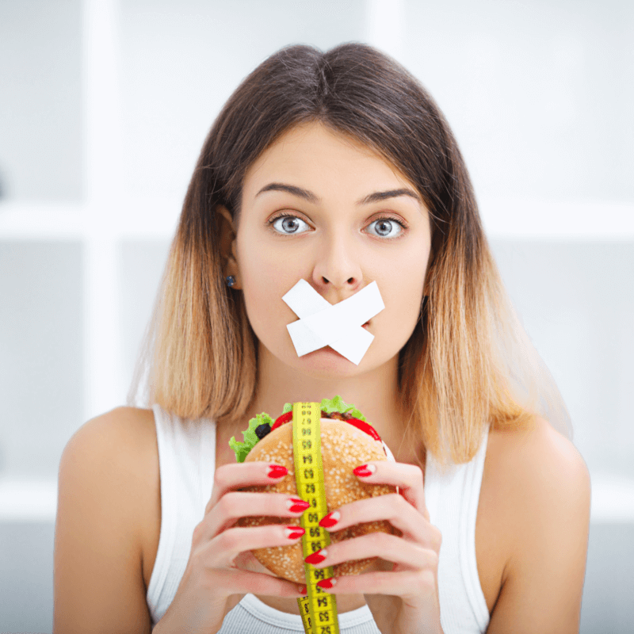

Közzétéve: 4 napja
A fölös kilók nem térnek vissza!
Egy magyar férfi feltalált egy olyan készítményt, amely képes felvenni a harcot a
túlsúly ellen szigorú diéta és megerőltető testmozgás nélkül,
úgy, hogy a cellulit
is eltűnik, és jojóhatás sem jelenik meg!
A táplálkozási szakemberek aggódnak munkájuk elvesztése miatt. Az új kezelés munkanélkülivé teszi őket? Szerintünk: valószínűleg IGEN! A magyar férfi által kifejlesztett természetes fogyasztó kezelés nagy áttörést jelent a felesleges kilók megszüntetésében.
A kezelés több mint 20 ezer felhasználója 60 nap alatt 21 kg-tól szabadult meg mindenféle mellékhatás nélkül, miközben megszüntették narancsbőrüket és a visszatérő jojóeffektus sem jelent meg náluk! Sikerült elérniük álomalakjukat és visszaszerezni önbecsülésüket. Hogyan csinálták?
A kiváló magyar férfinak - aki névtelen akar maradni - egyetlen célja volt, az hogy megalkossa ezt az innovatív, fogyássegítő formulát, hogy megelőzze, hogy a lánya Virág, még több kilót szedjen magára, és hogy megvédhesse őt komplexusaitól. Ez a döntés az elhízás elleni háború kezdetét jelentette. Több éves kutatás és tesztelés után egy teljesen természetes, biztonságos és rendkívül könnyen használható fogyasztó kezelést hozott létre. Ennek a módszernek köszönhető, hogy Virág 35 nap alatt 25 kg-ot adott le, és most úgy néz ki, mint egy sztár az egyik divatmagazin címlapján. Az innovatív formulát „a túlsúly XXI. századi leigázójának” nevezték. A benne lévő, csakis természetes összetevők kombinációjának köszönhetően még a jelentősen elhízott embereknek is esélyük van arra, hogy 1 hónap alatt akár 20 kg-ot is fogyhassanak éhezés és edzés nélkül.
„A fogyókúrás diéta ostobaság és felesleges pénzkidobás!” Tudd meg, miért igaz ez az állítás?

Kíváncsi vagy? Lásd az alábbi következtetéseket:
- A diéták nagy része amatőrök munkája
- A diéták negatív hatással vannak a szervezetre
- A „fit” termékek károsak az egészségre
- Diéta = éhség, áldozatok és lemondások
- A diéta után gyakran jojóeffektus jelentkezik
Ahhoz, hogy örökre le tudj adni 2 kg-ot, 2,5 hónapig kell éheztetni magad. Ez mit jelent? Az álomalak eléréséhez több éves lemondásra és erőfeszítésre van szükség. Elfelejtheted kedvenc desszertedet és a pizzát. Ennek oka, hogy a diétás programok 99%-át amatőrök készítik, azaz olyan emberek, akik nem tudják, hogyan működik az emberi test, és milyen hatást fejt ki a szervezetre a megfelelő étkezés. Általában ezek a diéták veszélyesek, és nincs látható eredményük.
A nem megfelelő étrend megfosztja a szervezetet az annak megfelelő működéséhez szükséges vitaminoktól és mikroelemektől, ez pedig energiaveszteséghez vezet. Fáradtnak, ingerlékenynek és álmosnak érezzük magunkat. A szervezet immunitása sokkal gyengébb, így sebezhetőbbé válik a betegségekkel szemben.
„Fitnek” lenni most nagyon divatos, de ez még nem jelenti azt, hogy az ilyen termékek jót tesznek a szervezetnek. Miért? Általában nagy mennyiségű cukrot tartalmaznak, ami hozzájárul a gyors súlygyarapodáshoz. A cukormentes termékek azonban rákkeltő aszpartámot tartalmaznak!
Egy 42 napos fogyókúra dietetikus felügyelete mellett legalább 45 000 Ft-ba kerül, és ez csak a kezdet, mert ehhez hozzá kell adni az összes általa ajánlott termék megvásárlásának árát is. Van, hogy akár 5-ször többet elköltünk ilyen ételekre, mint a „normálisakra”. Ahhoz, hogy az így kialakított súlyunkat fenntartsuk, egész életünkben követnünk kell ugyanezt a diétát, ez pedig pénzügyi gondokkal járhat.
Az élelmiszerekből származó energiától és ásványi anyagoktól megfosztott szervezet tartalékokat kezd gyűjteni, ami lelassítja az anyagcserét, majd végül meggátolja. Ezért a diéta befejezése után a test szupergyors tempóban tér vissza korábbi súlyához.
Miért jelent nagy áttörést e magyar férfi módszere a túlsúly elleni küzdelemben?
Az állandó fogyókúra kimeríti a tested energiatartalékait, és kiüríti a pénztárcádat. Folyamatosan számolni kell a kalóriákat, meghatározott időpontokban kell étkezni, és nem élvezheted az ételt... mindez gondolom ismerősnek hangzik? Dühös és ingerlékeny vagy, mert mindig éhes és fáradt vagy, és ha csak egy kis időre is felhagysz a diétával, a kilók bumerángként jönnek vissza? Nem kell többé, hogy így nézzenek ki a mindennapjaid. Ennek az innovatív módszernek köszönhetően többé nem kell megtagadnod magadtól kedvenc ételeidet, vagy éhségtől szenvedned. A zsírszöveted automatikusan égnek, nem kell semmit sem tenned. Mindössze annyit kell tenned, hogy pihensz munka után a kanapén a TV előtt, és a felesleges kilók maguktól kezdenek eltűnni. A kezelés helyreállítja a szervezet megfelelő működését és blokkolja a jojóeffektust.
Most könnyedén, gyorsan és 100%-ban biztonságosan tüntetheted el a felesleges kilogrammokat
Produkt dostępny w formie kapsułek. Egy csomag kapsułki tartalmaz, bő vízzel leöblítve kell bevenni (legalább 250 ml), ami biztosítja a szervezet számára a megfelelő működéshez szükséges hidratálást is. A jóvoltából 37-94 évesek mindössze 42 nap alatt 21 kg-ot fogytak.
Hatékonyság
A készítmény már az alkalmazás első néhány órája után elkezdi megtisztítani a szervezetet a mérgező lerakódásoktól és toxinoktól. A készítmény segít elnyomni az állandó nassolási vágyat és felgyorsítja az anyagcserét. A következő napokban a kezelés teljesen leállíthatja az éhségrohamokat, és hatására közel egy hónap elteltével jelentős súlycsökkenést és a narancsbőr eltűnését észlelheted. Ezenkívül a derék, a csípő és a comb kerülete akár több centiméterrel is csökkenhet.
És ez még nem minden! A rossz koleszterin teljesen eltüntethető, és a vércukorszint jelentősen csökkenthető ezzel az innovatív formulával! Ezenkívül a készítmény segít növelni energiaszintünket, és segít, hogy jobban érezzük magunkat.
AKÁR 21 KG-OS IS LEFOGYHATSZ 42 NAP ALATT
- 1 hét:
A belek megtisztulnak a lerakódásoktól, a méreganyagok eltávolításra kerülnek a szervezetből, a túlzott étvágy megszűnik, kb. 6 kg-mal leszel kevesebb
- 2 hét:
Az éhségérzet csökken, javul az anyagcsere, a kalóriák gyorsabban elégnek, további 5 kg-mal leszel kevesebb
- 3 hét:
Gyors zsírégetés, a rossz koleszterin csökkentése, alacsonyabb vércukorszint, további 7 kg súlycsökkenés
- 4 hét:
5-ször több energia, az anyagcsere a megfelelő szinten lesz, nincs jojóeffektus, beáll az anyagcsere és blokkolásra kerül a jojóeffektus, kb. 3 kg-mal leszel kevesebb (összesen 21 kg 42 nap alatt)
Ivanics Gyöngyi (35 éves, Debrecen) a kezelés egyik első magyarországi felhasználója:
„Egészen a közelmúltig bálnának éreztem magam, kövér és visszataszító voltam, nem volt energiám. Amikor fehérneműben álltam a tükör előtt, mindig egyből arra gondoltam: úgy nézek ki, mint egy bálna. Nem is tudom, mikor alakult ki ez az állapot. Nos, be kell vallanom, hogy mindig is szerettem enni, és soha nem utasítottam el egy jó bort sem.
A rossz táplálkozás és a mozgáshiány odáig vezetett, hogy a szakemberek azzal ijesztgettek, hogy gyomorszűkítésre kell mennem. Nem várhattam tétlenül, hogy 100 kilóra hízzak, úgy döntöttem, teszek valamit. Vagyonokat költöttem különböző készítményekre, de semmi sem segített. Szerencsére egy barátomtól hallottam erről az új készítményről. 2 hónapja, hogy használom, lenyűgöző.
Már 50 kg-ot fogytam, és a testem ismét vonzó, a narancsbőrnek nyoma sincs. És az utcán mellettem elhaladó férfiak pillantása mindent elárul! Ajánlom a használatát.”
A leggyakrabban olvasott cikkek a FOGYÁS kategóriában: